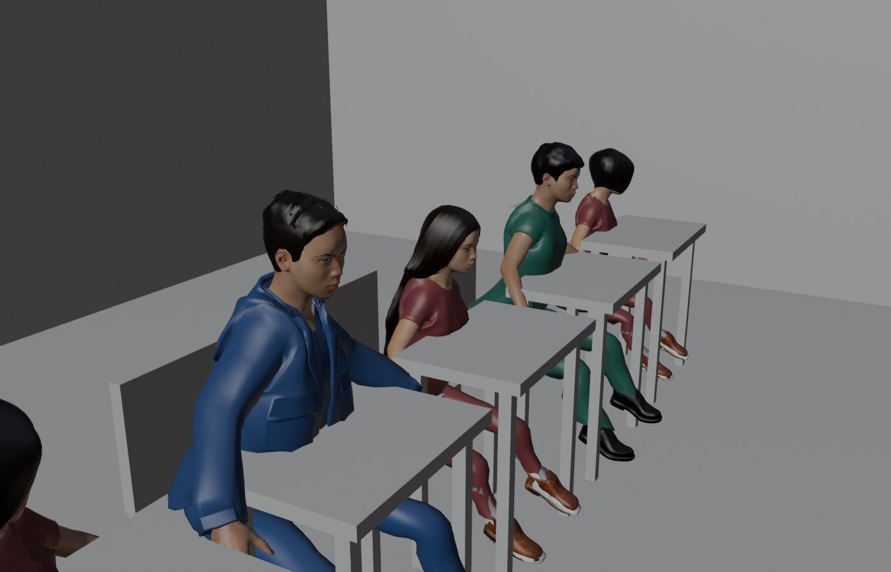

摆放
电脑放在讲台或第一排课桌上，镜头大致与胸部齐平或略低，不要俯拍。光线从正面或侧前方来，避免逆光和强光打在黑板上。
OpenPodium · 开放讲台
对着镜头讲一段课。教态、视线、口头禅和写板后的回视，会像运动训练一样，直接画在画面上。讲完可以回放，转写里的水词也会标出来。
我们会重点打磨电脑端：电脑放在讲台或课桌上就能练，不必再找手机支架。练习模式几分钟即可；课堂模式可以讲上 10 到 20 分钟再回看。手机同样可以用。

封面和一键演示在 WebGL 可用时，会换成更写实的 3D 人物：老师站在讲台前，体态镜仍把骨架、视线和口头禅画在画面上。模拟课堂、模拟路演里的同学和嘉宾也是同一套人物。显卡较弱或设置里选择插画时，会自动退回原来的插画。

不必另买设备。用教室里那台笔记本的摄像头就可以。
电脑放在讲台或第一排课桌上，镜头大致与胸部齐平或略低，不要俯拍。光线从正面或侧前方来，避免逆光和强光打在黑板上。
半身：腰部以上完整进入画面，距离大约一到两米。全身：再退远一些，或把镜头放到教室侧前方，从头到脚都能看见。
选择「课堂」模式，建议 10、15 或 20 分钟。电脑放在讲台上时，站好后可以按空格开始（课堂模式先有 5 秒倒计时），讲完再按空格结束，不必走回去点按钮。回放就在同一台电脑上：时间线上有标记，转写里的水词会标出，也可以写下自己的批注。
详细的摆放、光线和常见问题，见使用说明里的「课堂摆放」。
两种构图都支持，可以指定，也可以开讲后由画面自动判断。
电脑就放在讲台上。看得到视线是否落在讲稿上、肩膀是否晃、写板后有没有回看学生。适合日常对着镜头练，也适合大多数教室的讲台位置。

镜头再远一些，或放在侧前方。看得到站位、步伐，以及写板书时会不会整个人背对学生。适合微格教室，或请同伴把手机架在稍远的地方。
体态镜不是一堂课的评分表，而是讲完之后用来回看的镜子。时间线上会标出晃动、视线落下、口头禅、写板未回视等时刻；旁边是两句具体的话——这一次里值得留下的，和下一次可以试的一招。目前不能认出黑板上的字，但能看到手是否伸向板书区、是否在写、写完是否回视。口头禅靠听写：可下载本机听写（约 90 MB，一次即可），声音不离开这台设备；浏览器自带的听写在中国大陆经常连不上。
转写会整段留下来，词表里的水词用记号标出，点某一句就能跳到那里。历史留在这台设备上，可以和上一次对比。
教师面试的试讲常见是 10 分钟。下面是一种参考节奏，按自己的学科调整即可。讲完先看时间线上标记最密的那一段，一次只挑一两处改。
完整的练习单（开讲前怎么摆、讲完按什么顺序看回放、两个人怎么一起练）见 试讲练习单。
给语文试讲和教资面试回看用。只摆事实，不打分：能从转写和时间戳里找到的，列出原话和时刻；镜头和录音看不出的，留一张自查清单自己勾。
二十三条来自师范生备考笔记，全文可以打印：语文试讲观察表。在体态镜里，讲完后到回放的「观察记录」查看同一张表。
最近在路演和表达上，我总觉得差点意思。去参加职业规划赛，才发现台上的人都很专业。那段时间和我的对象一起「以赛促学」，专门练表达。练着练着，就做出了这面给试讲用的镜子，想开源出来，和大家一起用、一起改。
一台带摄像头的笔记本，用 Chrome 或 Edge 打开即可。放在讲台或第一排课桌上，用书本垫稳，插上电源。不必另买支架或外接摄像头。
默认不会。画面在这台电脑的浏览器里处理，录像默认不保存；要留给教研组一起看时，开讲前勾选「把录像存进本机历史」，也只存在这台设备上。
先确认允许了麦克风。Chrome 的在线听写在中国大陆经常连不上，可以在「设置」里下载本机听写（约 90 MB，一次即可），之后不用联网，声音也不出这台设备。Firefox 和微信内置浏览器不支持听写。
能，但必须用 https 地址打开。课堂里更推荐电脑：屏幕大、回放好看，也不用一直举着手机。
目前不能。它能看到手是否伸向板书区、是否在写、写完是否回看学生；写板时会留下板书区静帧，供你自己看字迹。
更多摆放和排错细节见课堂摆放指南。
画面来自单个摄像头的估计，受光线和构图影响，只作训练提示，不是精确测量，也不是心理或医学评估。视频默认不上传；体验计划需主动参加，默认关闭。